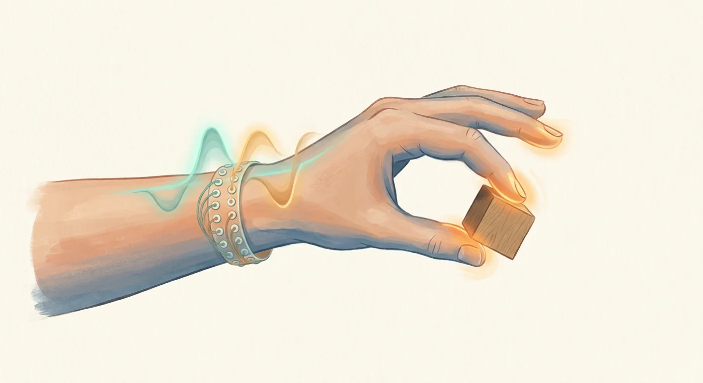

FRONTIER WATCH 01 / 前沿观察
手腕上的一圈电极，能读出每根手指用了多大力。
一句话：Memories.ai 团队在手腕贴了 18 通道表面肌电，实时判断哪几根手指在接触物体、用力是轻还是重。在留出数据上，手指组合加力度档位全部判对的比例是 80% 到 90%。
01 · 传感
18 通道
手腕一圈双极表面肌电。
02 · 力度
低力 / 高力两档
捏、握、按，每个动作分两档。
03 · 结果
80%–90%
留出数据上“手指组合 + 力度档位”完全判对。
他们做了什么
原帖事实
- 手腕一圈 18 通道双极表面肌电，实时记录肌肉电活动。
- 受试者按屏幕提示做捏、握、按，每个动作分低力 / 高力两档。训练数据只有“一小把”动作。
- 模型同时判断两件事：哪几根手指在接触物体，每根手指用的是哪一档力。
- 留出数据上，“手指组合 + 力度档位”完全判对的比例为 80%–90%。
- 他们的目标是给“物理 AI”（机器人灵巧操作）补上触觉和力的数据。下一步是加入触觉和手部姿态的真实标注，做连续的肌电到力模型。
怎么理解
控制手指的屈肌和伸肌，大部分肌腹长在前臂，肌腱一路穿过手腕才到手指。所以在手腕测肌电，就像站在排练厅门口听乐队：看不见谁在演奏，但能听出是哪几件乐器在响、响得多大声。AI 做的事，就是把这一团混在一起的“声音”拆回到每根手指。
对医生意味着什么
已有方向
肌电假肢：上肢截肢患者用残肢肌电控制假手，已经临床应用多年。难点一直是“分得清手指、控得住力度”，这类解码思路正好对口。
合理联想
手外伤与卒中康复：如果能稳定量化每根手指的出力，康复评估就能从“握力计一个总数”细化到“哪根手指、哪种动作没恢复”。
我的设想
肌肉损伤研究：前臂肌肉受伤或接受放疗后，肌电和力量之间的关系会不会变？这可以作为一个无创的功能读数，还需要专门设计实验验证。
评论区提问
沟通辅助：只剩少数手指能动的患者，能不能用“哪根手指 + 多大力”的组合来选字母？目前只是设想。
证据还差什么
- 样本太少：只用了“一小把”动作训练，受试者人数没写。
- 只分两档：低力和高力，还不是连续的牛顿数值。连续预测才更有临床价值。
- 跨天稳定性未知：第二天重新戴上电极，位置偏几毫米，准确率还剩多少？评论区也有人点出这是真正的考验。
- 疲劳与个体差异：肌肉疲劳、出汗、皮下脂肪厚度都会改变信号，每个人可能都要重新校准。
- 没有论文：这是社交媒体上的公司进展分享，方法和数据都没有公开，不能当成研究结论引用。
课堂练习：让 AI 帮你给“前沿新闻”定级
你是循证医学老师。下面是一条科技公司在社交媒体上发布的研究进展：
【粘贴原文】
请按这个格式回答：
1. 用两句话说清它做了什么（只用原文信息）。
2. 证据等级：同行评审论文 / 预印本 / 公司演示 / 新闻转述，选一个并说明理由。
3. 列出 3 个“还没回答的问题”（样本量、对照、可重复性、真实场景）。
4. 对临床的意义分三栏：已有证据 / 合理联想 / 纯推测。
限制：原文没写的数字不要编；不确定的写“需核实”。
来源
原始来源：Dalton Moore（Memories.ai）在 LinkedIn 的帖子 查看原帖 ↗。本页是 aiai 学院的解读，数字以原帖为准；临床联想部分属个人观点，不构成医疗建议。